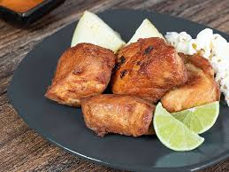

Frito Pastuso is a typical dish found in the department of Nariño,Colombia. To be more specifically, in the city of Pasto. This dish looks so simple and not too convincing, but I assure you, it is very delicious.
Ingredients
- Popcorn
- Green Lemon
- Beef
- Cassava
Steps
- Start cooking the beef until it gets a dark brown color
- Start heating the cassava and after some time, cut the green lemon in a half
- Put some lemon on the beef and the cassava
- Add the food on a plate and put some popcorn around
- Enjoy
See the recipes again
Go back